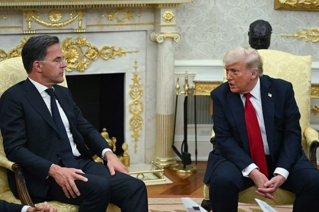

世界苦茶07月15日新闻 | 49条 | 特朗普给予俄罗斯50天最后通牒

特朗普给予俄罗斯50天最后通牒 | 英伟达恢复向中国销售H20芯片 | 中国二季度GDP超过5% | 中国外卖补贴快速加剧 | 以色列与叙利亚矛盾加剧
今日三条新闻分析
苦茶数据
美元兑人民币：7.17（昨日7.17，前日7.17）
美元兑日元：147.62（昨日147.40，前日147.33）
上证指数：3501（昨日3525，前日3510）
标普500指数：6268（昨日6259，前日6280）
比特币：117023（昨日121286，前日117848）
布伦特原油：69.04（昨日70.56，前日70.69）
中国新闻
• 中国幼儿园大规模关停 ：中国新生人口持续减少导致生源收缩，多所幼儿园关闭，专家预估今年可能有2万6000所幼儿园关停。据《财经》杂志报道，中国少子化冲击学前教育，多名专家预估，今年可能会有约2万6000所幼儿园关停。到了2030年，全国幼儿园数量可能减至约16万3700所，即未来每年平均关停约1万5000所。中国教育部数据显示，去年全国幼儿园共减少2万1100所，即每天有50多所幼儿园关停。中国幼儿园数量2022年首次出现负增长，之后连续三年下降，三年累计关停4万1500所幼儿园，降幅14.08%。
• 王毅称中印不针对第三方 ：中国外长王毅同印度外长苏杰生举行会谈时强调，两国关系有自身历史逻辑和内生动力，不针对第三方，也不应受第三方干扰。他表示，双方应相互合作而不是相互竞争。据中国外交部官网星期一发布的消息，王毅当天在北京同苏杰生举行会谈。王毅说，当前国际格局深刻演变，单边保护主义、强权霸凌行径给世界带来严峻挑战。作为毗邻而居的两大东方文明和主要新兴经济体，中印关系的本质是如何和睦相处、相互成就。王毅称，去年中国国家主席习近平和印度总理莫迪喀山会晤达成重要共识，为中印关系改善和发展指明方向。他进一步说，双方应择高处立，谋长远计，坚持睦邻友好方向，实现“龙象共舞”，找到两国互尊互信、和平共处、共谋发展、合作共赢的相处之道。
• 韩正会晤印外长促合作 ：中国国家副主席韩正在会见到访的印度外长苏杰生时说，中印要坚持高层引领，稳步推进务实合作，尊重彼此关切。据中国外交部官网消息，韩正星期一在北京会见苏杰生时表示，中国国家主席习近平去年10月同印度总理莫迪在喀山会晤，引领中印关系重启再出发。中印都是发展中大国、全球南方重要成员，做相互成就的伙伴，实现“龙象共舞”，是双方正确选择。韩正指出，双方要进一步落实两国领导人达成的重要共识，坚持高层引领、稳步推进务实合作、尊重彼此关切，推动中印关系持续健康稳定发展。
• 中方批印打“西藏牌” ：印度外长苏杰生将访华前，中国驻印度大使馆通过发言人强调涉藏课题是中印关系面对的棘手课题，并警告打西藏牌肯定是搬起石头砸自己的脚。这名女发言人星期天在社交平台X以英文写道：“涉藏问题是中印关系面对的棘手课题，也成为了印度的负担。”发言人指包括前官员在内的一些战略界、学术界人士，针对达赖喇嘛转世课题“发表了一些不当言论，与印度政府的公开立场相悖”。
• 女乘客机场车上晕倒 ：针对有旅客在西宁机场摆渡车内晕倒、其他乘客砸窗通风事件，青海机场有限公司回应称，当时为安全考虑未开车门，空调状态正常。综合《新京报》和澎湃新闻等媒体报道，有网民反映，因为西宁曹家堡机场摆渡车未开空调、车门长时间紧闭，一名女性旅客上星期五在车上晕倒，另一名男性旅客用应急锤将摆渡车的车窗砸碎。 （翻评：气候危机下，这种现象可能会多到熟视无睹的地步。）
• 国防部警告日本克制 ：中国国防部呼吁日本在军事安全领域谨言慎行。据中国国防部微信公众号“国防部发布”消息，中国国防部新闻发言人蒋斌星期一就近期涉军问题发布消息，有记者提问，日方计划向菲律宾出口六艘“阿武隈级”护卫舰。有分析认为，此举意在应对“中国海上扩张”，国防部对此有何评论？蒋斌回应时说，中方一贯主张，有关国家间的防务安全合作不应针对第三方或损害第三方利益。
• 电竞选手宙斯否认婚讯 ：卷入中国女生疑似不当行为风波的乌克兰电竞选手宙斯否认自己已婚，并后悔这场风波会演变成现今的情况。宙斯星期天在社交平台说，大约六个月前他在另一个社交平台Telegram，发布他和在上海认识的一名女生的几个视频，并称视频不含露骨内容或不尊重他人的内容。宙斯写道，后来发现这名女生有男朋友，女生因而遭遇很多人对她的仇恨。“事情会变成这样，我真的很后悔。”
• 澳总理反对改变台海现状 ：正在中国大陆访问的澳大利亚总理阿尔巴尼斯表示，澳大利亚反对任何单方面改变台湾海峡现状的作为，他正开始访华之行，以与该国最大贸易伙伴保持稳定的关系。据彭博社报道，阿尔巴尼斯星期天在上海的新闻发布会上表示：“重要的是，我们的立场要一致，澳大利亚长期以来一直如此。”他说，澳大利亚不支持在台湾采取任何单方面行动。我们的立场明确，而且我们一直坚持这一点。” （翻评：这个表态不是反对态度和一个中国政策，而是反对“任何单方面改变台海现状。）
• 胡锡进不支持女生被开除 ：中国《环球时报》前总编辑胡锡进认为，大连工业大学对与乌克兰电竞选手发生不当行为的李姓女生开除学籍处分过严，建议改为记过或留校察看。他也认为，应当受罚的是乌电竞选手，应永久禁止他进入中国大陆、香港和澳门。胡锡进星期天在微博发文，他不支持大连工业大学拟开除李姓女学生的决定。虽然他认同李姓女学生做错了，也同意她的行为影响了校誉名单，但说她有损国格，非常值得商榷。胡锡进质问，一个女生与外国已婚男士偷情就有损国格了？他并认为电竞选手把与女孩亲热的视频发到网上炫耀的行为才侮辱了乌克兰的国格。
• 网信办征求信息清除意见 ：中央网信办就《电子产品信息清除技术要求》国标征求意见，为期2个月。操作系统或其他关联软件中应提供一键清除所有用户数据的功能。手机、平板、计算机固态硬盘需支持数据覆写2次，磁盘需支持数据覆写3次。电子产品回收经营者需在回收时确认完成清除。邮寄回收者应为每个电子产品提供追溯码。
亚太印太新闻
• 泰国首相涉道德调查 ：泰国反贪污委员会计划就被停职的首相佩通坦所面对的道德失范指控对她展开调查。此举将加剧佩通坦因处理边境争端引发的法律困境。据泰国媒体报道，泰国反贪会此前已进行初步调查，周一决定启动全面调查小组作进一步调查。如果调查小组认定证据充分，可能正式起诉佩通坦，并将案件移交最高法院审理。泰国最高法院曾在类似案件中裁决政治领袖终身禁止担任或竞选公职。
• 日本收紧驾照转换政策 ：由于外国人在日本公路涉及交通事故增多，日本决定收紧外国人在日本转换驾照的条例。不过持国际驾照在日本自驾的游客，包括新加坡驾车者，不受新条例影响。从10月开始，交通考试门槛也将大大提高，从现有10项考题增加到50项考题。另外，外籍人士在日本申请转换驾照必须提交住民票复印件。新条例主要是为了防止中国游客以民宿等非永久住址作申请。日本转换驾照制度原是为在海外长期居住的日本人回国后开车所设。但是，令当局感到困惑的是，此程序存在的法律漏洞，让中国人涌入日本转换驾照。
• 日自民党支持率新低 ：日本公共广播公司NHK一项民调显示，日本执政党自民党支持率降至24%，下跌至2012年重新执政以来的最低点，凸显出执政联盟在参议院选举中可能面临的困境。NHK星期一公布7月11日至13日进行的民调结果显示，自民党的支持率一周内下滑4.1个百分点，降至24%，而首相石破茂领导的自民党政府支持率保持不变，为31%。根据最近几次调查，自民党的支持率持续下滑，这表明石破茂领导的自民党和公明党联合政权继去年10月失去众议院多数席位后，可能即将在星期天举行的参议院选举中也失去多数。
• 赖清德视导布雷演习 ：台湾总统赖清德星期一上午赴高雄，视导汉光演习的海军防御性布雷操演和实兵演练行动。据台湾总统府官网消息，赖清德在现场肯定官兵戮力辛劳，并为台军加油打气。赖清德首先抵达平海营区，由一九二舰队长陈明峰简报水雷整备流程，了解水雷储放、引信安装、电池模组、设定器等作业情形。随后，赖清德前往东登码头，听取水雷装载简报，并登艇视导布雷系统。
• 台首座超级电池厂爆炸 ：位于高雄市的台湾首座超级电池工厂星期一发生爆炸事故，造成15人受伤。综合台湾《联合报》和TVBS新闻网报道，位于高雄市小港临海工业区的三元能源科技公司当天发生爆炸起火，现场浓烟狂窜，造成12名员工轻微受伤、三名消防员灼伤。高雄市消防局指出，当天上午5时04分接获小港区长春街工厂火警，出动46车91人前往抢救，火势持续控制中，伤员目前都送院送医。院方表示，伤员均意识清楚、生命征象稳定，仍在治疗中。
• 台大罢免需55%投票率 ：台湾民意基金会发布的最新民意调查结果显示，国民党要催出至少55%投票率，才足以抗衡大罢免。在罢免区中，支持罢免群众政治态度已经成型。综合台湾联合新闻网和ETtoday新闻云报道，台湾民意基金会星期一发布大罢免封关前的民调结果。台湾中央选举委员7月3日会公告，针对24名在野国民党与民众党立委，以及新竹市长高虹安的罢免案，本月16日起至7月26日投票时间截止前，不得发布或评论罢免民调。
• 柬宣布2026年实施义务兵役 ：柬埔寨与泰国关系持续紧张，金边决定2026年起正式实施义务兵役制。《柬中时报》报道，柬埔寨首相洪马内星期一出席国家宪兵成立32周年纪念活动时宣布，政府计划从明年起正式实施义务兵役制。法新社报道，洪马内在讲话中表明，5月底与泰国军队在边境主权争议地区爆发的致命冲突，对柬埔寨来说是一次教训，也是审查、评估和设定未来军队改革目标的机会。
• 韩国医学生决定复学 ：韩国医生学会说，8000多名医学生决定重返课堂，结束为抵制医学院扩招政策而举行的近一年半罢课行动。韩国医生学会发言人星期一告诉法新社，参加罢课行动的医学生已经同意返校。预计约有8300名医学生返回校园，具体返校时间安排由各医学院自行决定。韩国医学生协会早些时候发布声明说，学生之所以决定复学，是考虑到继续采取抵制行动可能导致韩国医疗系统基础崩溃。
科技新闻
• 特朗普将公布AI能源投资 ：美国总统特朗普将于当地时间周二在宾夕法尼亚州宣布总额700亿美元的人工智能和能源投资。据一位了解活动安排的政府官员透露，特朗普将在匹兹堡郊外的活动上公布相关细节。这些投资来自多家企业，涵盖新建数据中心、电力扩容、升级电网基础设施以及AI培训。特朗普将与共和党参议员大卫·麦考密克一同出席，后者将在卡内基梅隆大学主办首届宾夕法尼亚能源与创新峰会。预计将有多达六十位企业高管在内的人工智能和能源领域领袖出席。据这位官员透露，预计出席的人员包括贝莱德公司的拉里·芬克以及Anthropic公司的达里奥·阿莫迪等。
• 黄仁勋称将恢复向中国市场销售H20芯片： 英伟达公司CEO黄仁勋今天在接受记者采访时宣布两个重要进展：美国已批准H20芯片销往中国，英伟达将推出 RTXpro GPU 。黄仁勋说：“美国政府已经批准了我们的出口许可，我们可以开始发货了，所以我们将开始向中国市场销售H20。我非常期待能很快发货H20，对此我感到非常高兴，这真是个非常、非常好的消息。第二个消息是，我们还将发布一款名为 RTX Pro 的新显卡。这款显卡非常重要，因为它是专为计算机图形、数字孪生和人工智能设计的。”美国政府4月决定禁止英伟达向中国销售其H20芯片。
• Meta巨资建AI中心 ：Meta 公司 CEO 马克·扎克伯格本周一再度夸下海口，称将投资 “数千亿美元” 建设多个超大规模AI数据中心，全力推进 “超级智能” 的研发。他在社媒发文称，Meta正在建设多个 “吉瓦” 级别的数据中心集群，其中包括预计在2026年上线的首个集群“普罗米修斯”，同时另一个名为“海伯里安”的集群也在建设中，预期将在几年内扩展到五吉瓦规模。单单一个巨型数据中心的占地面积，就相当于纽约曼哈顿的大部分区域。扎克伯格强调，Meta将拥有行业领先的算力，而且研究人员的“人均计算资源”将远超其他机构。他期待与顶尖研究人员合作，共同推动前沿发展。
财经新闻
• 中国二季度GDP同比增5.2%、环比增1.1%，好于预期 ： 一二三产业同比分别增3.8%、4.8%、5.7%。上半年，城镇居民人均可支配收入 28844元，中位数25380元同比增4.7%；农村人均可支配收入11936元，中位数10060元同比名义增5.9%、实际增6.2%。6月全国城镇调查失业率5.0%，企业周均工作48.5小时。6月社会商品零售37580亿元、同比增5.3%；餐饮收入4708亿元、同比仅增0.9%，是2022年12月以来最差。因八项规定学习教育，各地严控公职人员聚餐 。6月末商品房待售76948万平、同比增4.1%，其中住宅40821万平、同比增6.5%。
• 韩美力争关税协议 ：韩国通商交涉部长吕翰九星期一说，有望在8月1日美国对韩加征25%关税前，与美方达成原则性贸易协议。负责韩国对美关税谈判的吕翰九坦言，为达成共识，韩方或需在农产品市场上作出“策略性决定”，各方将这解读为可能在非关税壁垒或市场开放方面作出有限让步。吕翰九星期一在政府世宗办公大楼举行的韩美关税协商结果发布会上说，现在距离美方关税生效日不到三周，但“仍可能在20天内就框架性内容达成协议，为后续细节谈判铺路”。
• 澳总理吁中澳绿钢合作 ：在中国进行正式访问的澳大利亚总理阿尔巴尼斯说，中澳两国应在绿色钢铁领域加强合作，并呼吁中国解决钢铁产能过剩问题。阿尔巴尼斯星期一在上海与中澳两国商界人士会面时，发表上述讲话。据路透社报道，中国用于生产钢铁的铁矿石，有约三分之二从澳洲进口。有智库评估，随着中国钢铁业逐步绿化，澳洲铁矿石业如果无法提供更高质量的铁矿石，可能会因流失中国市场而失掉高达一半的收入。
• 特朗普将推700亿投资案 ：美国总统特朗普即将宣布总值700亿美元的人工智能和能源投资项目。彭博社报道，一名白宫官员和一名知情人士星期一透露，特朗普将于星期二在匹兹堡郊外举行的一场活动公布相关细节。这些投资来自多家企业，涵盖新建数据中心、电力扩容、升级电网基础设施，以及AI培训。报道称，共和党参议员麦考密克将与特朗普一同出席活动。麦考密克正在卡内基梅隆大学主办首届宾夕法尼亚州能源与创新峰会。
• 中国稀土出口创新高 ：官方数据显示，中国6月的稀土出口量攀升至2009年以来的最高水平，表明全球买家正在努力获取用于制造强力磁铁的材料。据彭博社报道，自4月初以来，稀土行业一直处于动荡之中，当时主要供应国中国在中美贸易僵局加剧的背景下，启动了出口管制。这给所谓的永磁体供应带来了沉重打击。星期一公布的中国海关数据并未涵盖这类材料。中国海关总署星期一发布的数据显示，6月稀土出口数量攀升至7742吨，同比增长60%，这涵盖矿物或金属形式的出口。
• 中国新能源车注册激增 ：官方数据显示，今年上半年中国新注册登记新能源汽车同比增长超过27%。中国公安部交通管理局星期一在微信公众号公布，截至6月底全国新能源汽车保有量达3689万辆，占汽车总量的10.27%。其中，纯电动汽车保有量2553.9万辆，占新能源汽车总量的69.23%。公安部交通管理局也说，上半年新注册登记新能源汽车562.2万辆，同比增长27.86%，创历史新高。
• 中国6月大豆进口创新高 ：受巴西大豆丰收及中美贸易紧张局势影响，中国6月大豆进口量创下历年同期新高。中国海关总署星期一公布的数据显示，今年上半年中国累计进口大豆4937万吨，同比增长1.8%。据路透社测算，中国6月共进口大豆1226万吨，同比增加10.35%。
• 外卖补贴引饮品浪费 ：中国外卖平台掀起补贴狂潮，出现大量未领取订单堆积的情况，有商家不得不倒掉制作好的饮品。综合九派新闻等媒体报道，福建厦门一家茶饮店星期天将大量制作好的饮品倒掉，引发网络争议。该茶饮店店长回应称，这是外卖平台大额补贴后，处理大量订单堆积的无奈之举，但消费者无损失。店长表示，因外卖平台发放了零元奶茶券，导致店铺遭遇“爆单”情况。大量消费者通过优惠活动下单后，却未能按时到店领取或选择爽约，使得店内堆积了众多已制作完成却无人问津的饮品。
• 阿里计划未来100天 每周六推“超级星期六”： 淘宝闪购甩出“满18减18”的大招，美团外卖红包立刻以“0元喝奶茶”反击，京东宣布每晚10万份，一口价16.18元小龙虾……近日，各家电商平台打响了新一轮外卖大战。还有消息称，阿里计划在未来100天里每个周六“都可以买到超低价甚至免费的奶茶咖啡和快消速食”。据报道，阿里试图再造一个全民参与的促销节日“超级星期六”：在未来100天内，消费者在每个周六都可以获得总额为 188元外卖消费红包，红包总额度会根据每期活动有变化，消费者用红包支付后可以买到超低价奶茶咖啡和快消速食。就上述消息，向知情人士求证，对方称，“确实有这个事情”。
• 欧盟拟对美报复关税 ：意大利外长塔亚尼说，如果欧盟与美国未能达成贸易协议，欧盟已准备好一份对美国商品征收价值210亿欧元关税的清单。塔亚尼星期一接受意大利《信使报》采访时说，如果与美国的贸易协议最终无法达成，欧盟还会有第二轮反制措施。不过，他仍对谈判取得进展充满信心。“关税损害所有人，首先是美国。如果股市下跌，美国人的养老金和储蓄将面临风险。”
• 中美贸易总值下降9.3% ：中国海关总署表示，因受美国施加关税影响，2025年上半年，中国对美国进出口总值同比下降9.3%。中国海关总署星期一公布的上半年贸易数据显示，上半年，中国对美国进出口总值2.08万亿元人民币，同比下降9.3%。其中，出口1.55万亿元，下降9.9%，进口5303.5亿元，下降7.7%。
• 6月新增贷款2.24万亿 ：中国6月新增人民币贷款2.24万亿元人民币，超市场预期。中国人民银行星期一公布上半年金融数据显示，上半年人民币贷款增加12.92万亿元，人民币存款增加17.94万亿元。根据前值计算，6月新增人民币贷款2.24万亿元。
• 英行长反对大银行发稳定币 ：英国央行行长贝利近期在采访中警告说，世界上的大型银行不应发行自己的稳定币，此举可能会导致银行系统内的资金外流。这表明贝利对稳定币的立场，或与美国总统特朗普的支持态度相冲突。贝利在接受《泰晤士报》采访时说，他更希望银行提供数码化的传统货币，也就是“代币化存款”，而不是稳定币。稳定币是一种旨在保持稳定价值的数码资产，通常与另一种货币挂钩，近年来在全球范围内迅速崛起。
• 中国钢铁出口创新高 ：尽管全球贸易保护主义升温，中国钢铁出口在第二季度仍创下历史新高。据彭博社报道，作为全球最大钢铁生产国，中国今年第二季度钢铁出口量达到3070万吨，同比增长11%，超过10年前创下的历史纪录。今年上半年出口总量同比增长9%。尽管美国总统特朗普已大幅提高钢铁进口关税，欧盟、越南和印度等多国也纷纷实施针对中国钢铁产品的贸易保护措施，但中国出口商依然积极应对，通过扩大未受关税限制产品的出口，并开拓新的市场维持出口增长。
• 澳总理承诺共解产能过剩 ：正在中国访问的澳大利亚总理阿尔巴尼斯承诺，致力于与中国合作解决全球钢铁产能过剩问题。据路透社报道，阿尔巴尼斯星期一在上海与中澳两国商界领袖会面，并在致辞时说：“在两国合作推进脱碳的同时，我们也需要共同努力，解决全球钢铁产能过剩问题。”阿尔巴尼斯也说：“确保全球钢铁行业的可持续发展并由市场驱动，符合两国的利益。”
• 农村银行推“养老贷”引争议 ：中国多家农村银行推出针对低收入群体和老年人的特殊贷款产品，以帮助他们补缴养老金或提高养老金缴费水平，引发社会对老人债务风险的争议。综合财新网和彭博社报道，近两个月来，中国湖南省的长沙农商银行、华容农商银行、临澧农商银行等30家农商银行，密集推出“养老贷”。这项贷款用于帮助申请人补缴养老金或提高养老金缴费水平，从而在退休后获得更多养老金或满足领取养老金的最低缴费年限。中国一般要求至少累计缴费满15年，方可领取养老金。
俄乌战争
• 乌总统提名新总理人选 ：乌克兰总统泽连斯基宣布提名第一副总理斯维里登科为新总理，为乌克兰政府改组铺平道路。路透社报道，泽连斯基星期一在社交媒体发文说，他已提议尤利娅·斯维里登科领导政府，并“大幅革新政府的工作”。泽连斯基的提名需要议会批准。俄乌战争已进入第四年，乌克兰正寻求重振资金匮乏的经济，并发展国内军火工业。
• 美乌商加强防空合作 ：美国乌克兰问题特使凯洛格访问基辅，与乌克兰总统泽连斯基讨论加强乌克兰防空能力，以及在欧洲协助下采购武器等事宜。路透社报道，泽连斯基星期一会见凯洛格后在社交媒体发文说：“我们讨论通往和平的道路，以及我们可以共同采取哪些切实行动来推动和平进程，包括加强乌克兰的防空能力，与欧洲合作联合生产和采购防御武器。当然，还有对俄罗斯及盟友的制裁。”此次会晤是在美国总统特朗普宣布将向乌克兰运送爱国者防空导弹的隔天举行的，而美国预计将于星期一宣布一项向基辅提供进攻性武器的新计划。
• 特朗普称将对俄重罚 ：特朗普7月14日与北约秘书长吕特会晤时宣布，如果俄乌在50天内没有达成和平协议，美国将对俄罗斯征收“非常严厉”的关税，并提及征收次级关税。白宫官员稍后解释，这些关税包括对俄征收的100%关税和对购买俄罗斯石油的国家征收次级关税。自2022年12月欧盟禁止俄罗斯石油以来，中国和印度分别占俄罗斯原油出口的47%和38%。会晤中特朗普说，“我回家告诉第一夫人，‘我今天打电话给普京了，谈话相当不错。’她回应说‘真的吗？又一个乌克兰城市刚刚被炸了。’”两人还讨论了美国武器供应的方式。美国将通过北约向乌克兰提供“数十亿”美元的军援，北约将支付购买武器的费用。吕特说，德国、芬兰、加拿大、挪威、瑞典、英国和丹麦将成为出资方。泽连斯基14日与美国乌克兰事务特使凯洛格会面，就加强乌防空能力、通过与欧洲协作实现国防武器的联合生产及采购，以及对俄罗斯和“帮助”俄罗斯的国家实施制裁等进行了“富有成效”的对话。
国际新闻
• 以色列空袭叙南部 ：以色列7月14日对叙利亚南部苏韦达省发动空袭。苏韦达省德鲁兹派与贝都因部落13日爆发激烈武装冲突，已造成至少99人死亡、另有多人受伤。当局14日部署安全部队，控制多个乡村地区，包括迈兹拉阿镇，并已接近省会苏韦达市和卡纳克尔镇。以色列国防部长卡茨14日说，以国防军当天早些时候轰炸叙安全部队坦克车队，这是“向叙利亚政权发出的信息和明确警告”。他还说，以色列不会允许叙利亚的德鲁兹人遭受伤害。叙利亚媒体报道，以军对苏韦达省迈兹拉阿镇和卡纳克尔镇附近地区发动数次空袭，但当局否认安全部队的坦克遭到以色列空袭，称以方只是对坦克附近进行了“警告性打击”。叙外交部对苏韦达省局势升级表示遗憾，呼吁发生冲突的当地武装团体立即停止暴力、交出非法武器。声明同时呼吁其他国家尊重叙利亚主权、不支持任何分裂活动。外交部长希巴尼要求其他国家不得“干涉叙利亚内政”。去年12月叙利亚政局剧变后，以色列以“自卫”为由，趁机出兵占领戈兰高地缓冲区及毗邻地区，寻求与占苏韦达省人口多数的德鲁兹人合作，在叙南部建立所谓“防御区”。
• 西班牙和爱尔兰将与20多个国家一道宣布针对以色列的“具体措施”： 外交官告诉《中东之眼》，下周，20多个国家将在波哥大召开会议，宣布“针对以色列违反国际法行为的具体措施”。
此次“紧急峰会”将于7月15日至16日举行，由海牙集团联合主席国哥伦比亚和南非政府共同主办，旨在协调外交和法律行动，以应对他们所称的由以色列及其强大盟友造成的“有罪不罚的氛围”。海牙集团目前由八个国家组成，于1月31日在荷兰同名城市成立，其既定目标是追究以色列在国际法下的责任。南非国际关系与合作部长罗兰·拉莫拉告诉《中东之眼》：“海牙集团于1月成立，标志着全球应对‘例外主义’和国际法普遍受到侵蚀的行动的转折点。”他补充道：“同样的精神也将激发本次波哥大会议，与会各国将发出明确的信息：没有任何国家能够凌驾于法律之上，任何犯罪行为都不能不受追究。”
• 伊朗称美试图重启核谈 ：伊朗外交部长阿拉格齐说，美国试图重启与德黑兰的核谈判，伊朗正在权衡时间和地点等问题，但并不急于重新开始磋商。彭博社星期一报道，阿拉格齐在上星期六的电视讲话中说，美国方面坚持回到谈判桌前，伊朗已经收到多条信息，正在权衡有关潜在谈判时间、地点和结构等选择，但“不急于进行鲁莽谈判”。今年以来，美伊代表团已在阿曼调解下，就伊核计划举行五轮谈判。以色列6月13日对伊朗发动大规模空袭，双方随后陷入12天激烈空战，美伊谈判就此搁置。
• 以巴外长未会面 ：以色列和巴勒斯坦外长原定出席欧盟会议，但巴勒斯坦权力机构否认双方将举行会晤。法新社报道，以色列外长萨尔和巴勒斯坦外长沙辛星期一将到布鲁塞尔，出席欧盟与南方邻国部长级会议。这将是自2023年10月加沙冲突爆发以来，以色列和巴勒斯坦部长首次出席同一场高级别会议。以色列外交部长办公室说，除了部长级会议外，萨尔也将与欧盟外交与安全政策高级代表卡拉斯，以及欧盟地中海事务专员苏伊卡举行会谈。
• 叙部落冲突致37死 ：叙利亚南部苏韦达省爆发武装冲突，已造成30多人死亡。法新社报道，苏韦达省的贝都因部落与德鲁兹社区之间，星期天爆发武装冲突。据总部位于英国的叙利亚人权观察组织报告，目前已有37人丧生，其中27人是德鲁兹教徒，包括两名儿童；10人来自贝都因部落；另有约50人受伤。
• 美最高法院助拆教育部 ：美国最高法院否决一名联邦地区法官发布的禁令，为特朗普政府拆解教育部的计划开了绿灯。路透社报道，美国最高法院星期一以一份简短、未经署名的命令形式发布这项决定。在九名大法官中，三名自由派大法官反对否决禁令。其中，大法官索托马约尔在她表达异议的法律意见书中写道：“当行政部门公开宣布其打算违法并付诸实施时，司法部门的责任是制止、而不是加速这种非法行为。”
• 西班牙高温致千人亡 ：西班牙发布最新数据，过去两个月，高温导致1180人死亡，较去年同期大幅增加。路透社报道，西班牙环境部星期一引述卡洛斯三世卫生研究所的数据发声明说，5月16日至7月13日期间，有1180人死于与高温相关的疾病，比去年同期高出近16%。7月第一周的死亡人数更显著增加。其中，大多数死者年龄超过65岁，过半数为女性。
• 美教堂枪击致三死 ：美国肯塔基州一座教堂发生枪击事件，造成包括枪手在内的三人死亡。路透社报道，这起事件发生于星期天，地点在肯塔基州列克星敦的一座浸信会教堂。当地警局说，枪击造成两名妇女死亡、两名男子受伤，枪手已被警方击毙。当局并未提供凶手的姓名和年龄。
• 特朗普或借翻修炒掉鲍威尔 ：美国白宫经济委员会主任哈塞特说，白宫正在调查美国联邦储备局的翻新费用，如果有证据支持，总统特朗普有权因故解雇美联储主席鲍威尔。特朗普曾多次敦促鲍威尔降息，并在这个问题上批评鲍威尔。近日，特朗普政府官员还将矛头对准美联储大楼的翻新项目，认为相关计划过于奢华和昂贵。外界猜测，此举可能旨在尝试通过另一种途径，提前解雇鲍威尔。